메이플스토리 관련 기능 루시의 기능 중 온라인 게임 '메이플스토리' 관련 기능들입니다. @하늘색: 해당 기능을 불러오는 명령어의 접두어 [분홍색]: 필수로 입력해야 하는 인자 (연두색): 생략 가능한 옵션 인자 ▶ @메이플 사용법: @메이플 [닉네임] 해당 메이플 캐릭터의 사진과 정보를 출력합니다. 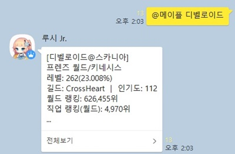 ※한 번 이상 검색 시, 닉네임을 생략하면 최근에 가장 많이 검색한 닉네임을 루시가 스스로 기억해서 불러옵니다. 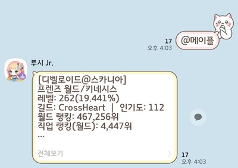 ▶ @무릉 사용법: @무릉 [닉네임] (닉네임2) (닉네임3) ... 해당 메이플 캐릭터의 무릉도장 기록을 검색합니다. ※한 번 이상 검색 시, 닉네임을 생략하면 최근에 가장 많이 검색한 닉네임을 루시가 스스로 기억해서 불러옵니다. ※닉네임을 6인 이하 다수 입력 시, 다수의 무릉도장 기록을 한꺼번에 검색할 수 있습니다.다중 검색은 닉네임 생략 시 기록에 반영되지 않습니다. ▶ @유니온 사용법: @유니온 [닉네임] 해당 메이플 캐릭터의 유니온 레벨과 전투력, 코인 수급량을 검색합니다. ※한 번 이상 검색 시, 닉네임을 생략하면 최근에 가장 많이 검색한 닉네임을 루시가 스스로 기억해서 불러옵니다. 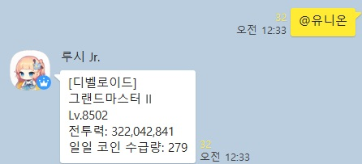 ▶ @레벨 사용법: @레벨 [닉네임] (목표레벨) 해당 메이플 캐릭터의 레벨, 경험치 정보와, 만렙까지의 경험치를 출력합니다. ※한 번 이상 검색 시, 닉네임을 생략하면 최근에 가장 많이 검색한 닉네임을 루시가 스스로 기억해서 불러옵니다. ※목표레벨을 같이 입력하면, 해당 레벨까지의 경험치량을 출력합니다. ▶ @히스토리 사용법: @히스토리 [닉네임] 해당 메이플 캐릭터의 경험치 히스토리를 출력합니다. 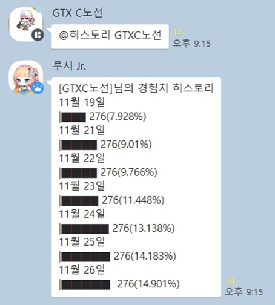 ※한 번 이상 검색 시, 닉네임을 생략하면 최근에 가장 많이 검색한 닉네임을 루시가 스스로 기억해서 불러옵니다. 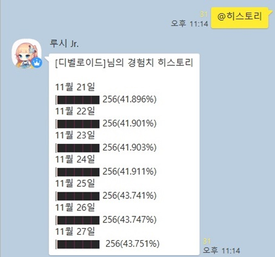 ※데이터를 가져오는 maple.gg 사이트의 잦은 구조 변경으로 기능이 작동하지 않는 경우가 있습니다. 이 경우 루시가 스스로 주기적으로 검색 방식을 수정하여 복구하며, 자동 복구에 문제가 생길 경우 개발자가 직접 수정하게 됩니다. ▶ @레벨히스토리 사용법: @레벨히스토리 [닉네임] 해당 메이플 캐릭터의 레벨 히스토리를 출력합니다. 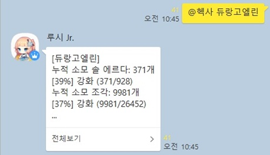 ※한 번 이상 검색 시, 닉네임을 생략하면 최근에 가장 많이 검색한 닉네임을 루시가 스스로 기억해서 불러옵니다. ※데이터를 가져오는 maple.gg 사이트의 잦은 구조 변경으로 기능이 작동하지 않는 경우가 있습니다. 이 경우 루시가 스스로 주기적으로 검색 방식을 수정하여 복구하며, 자동 복구에 문제가 생길 경우 개발자가 직접 수정하게 됩니다. ▶ @메창 사용법: @메창 [닉네임] 해당 메이플 캐릭터의 레벨, 무릉, 유니온을 통해 메창력을 계산합니다. 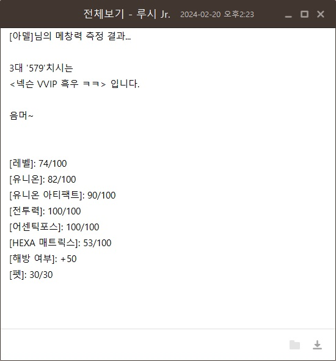 ※닉네임 없이 명령어만 입력 시, 사용법과 계산 기준을 출력합니다. 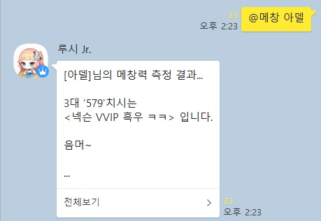 ▶ @무토 사용법: @무토 (음식이름) 배고픈 무토 일일 퀘스트의 재료 위치를 표시합니다.(츄릅나무의 경우 좌, 우측 모든 발판 중 랜덤으로 등장합니다.) 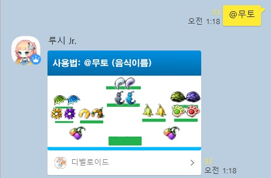 요리 이름을 입력하면 해당 요리의 요구 재료만을 표시합니다. 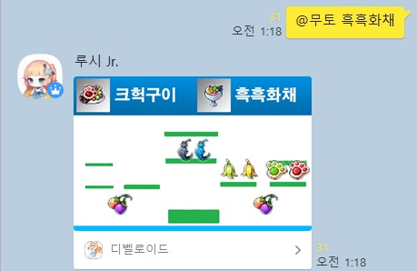 ▶ @보스 사용법: @보스 [보스이름] 해당 보스의 정보를 출력합니다.보스 이름은 띄어쓰기 없이 난이도와 함께 써주세요! (예시: 카오스벨룸) 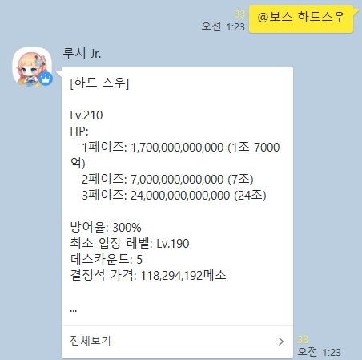 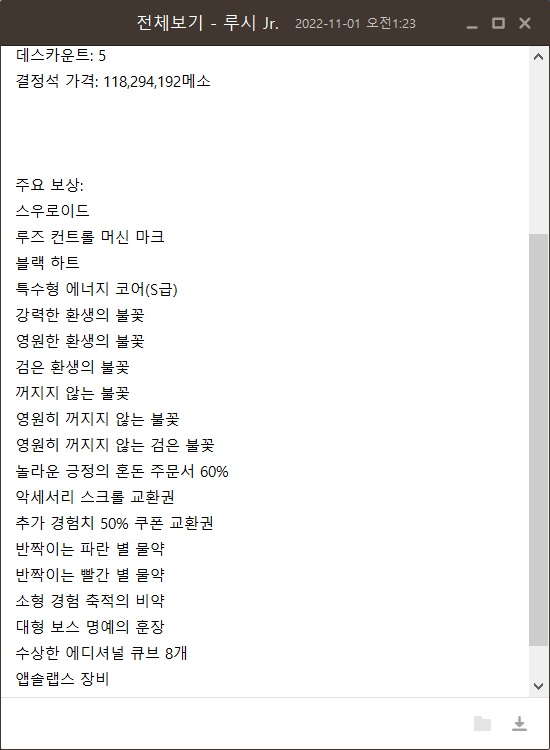 ▶ @농장 사용법: @농장 [몬스터이름] 몬스터 라이프의 해당 몬스터 보유 농장 목록을 출력합니다.meso.kr 사이트의 정보를 기반으로 하고 있습니다. 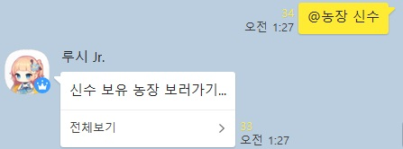 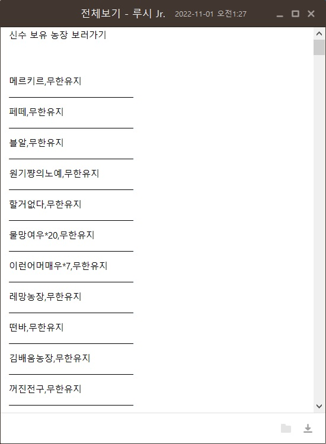 ▶ @물통 사용법: @물통 (서버이름) (갯수) 현재 메소 시세(물통) 을 검색합니다.아무 인자 없이 명령어 입력 시 모든 서버의 시세를 출력합니다. 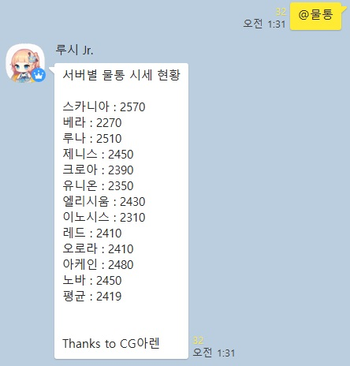 서버 이름과 갯수를 같이 입력하면 현재 시세에 맞춰 원화 가치를 계산해 줍니다. 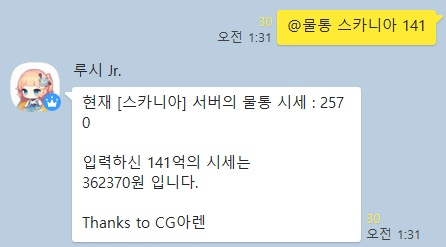 ※통계 수집 사이트에 문제가 생길 경우 검색했던 가장 최근 시세를 불러옵니다. 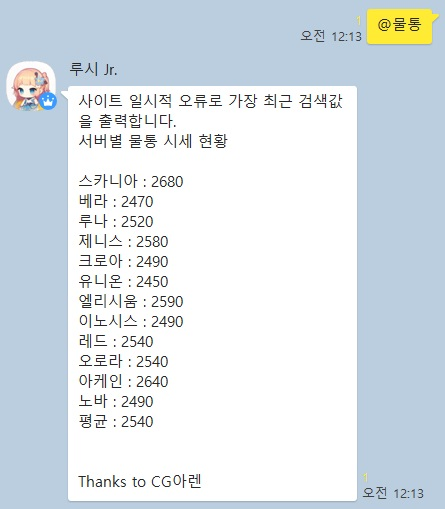 ▶ @방무 사용법: @방무 [보스방어율] [스텟창방무] (코강방무) (스킬방무1) (스킬방무2) ... 자신의 실 방무 스텟과, 해당 방어율의 보스에게 들어가는 딜량을 계산해줍니다.※모든 인자는 퍼센트(%)를 빼고 입력해주세요! ▶ @재획 사용법: @재획 [몬스터레벨] [아이템드롭율] [메소획득량] [시간당 마릿수(만)] 본섭 기준, 재획비 구매 효율을 계산해줍니다.※간당 마릿수는 만 마리 단위로 입력해주세요!※드랍율과 메획은 재획비 사용 전 기준으로 스텟창의 수치를 입력하면 됩니다. ▶ @극성비, @태성비, @익성비, .... 사용법: @익성비 [레벨] @성비1 [레벨] @성비2 [레벨] @성비3 [레벨] @태성비 [레벨] @극성비 [레벨] 극한 성장의 비약, 태풍 성장의 비약 등 각종 비약류의 경험치량을 출력합니다. 성비1: 200~209 비약\n성비2: 210~219 비약\n성비3: 220~229 비약 ▶ @추옵 사용법: @추옵 [세트이름] (무기이름) 해당 무기의 1~5등급별 공격력/마력 추옵을 검색합니다. 무기 이름을 생략 시 해당 세트의 모든 무기별 추옵을 출력합니다. 아무 인자도 입력하지 않을 시 사용법을 출력합니다. ▶ @녜힁 사용법: @녜힁 [글자수] 2~6글자 사이의 녜힁(뜻 없는 잡닉) 닉네임을 생성합니다.